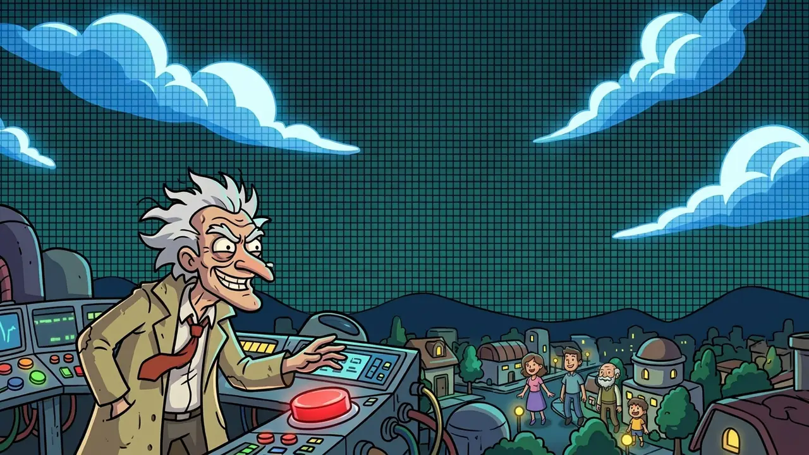
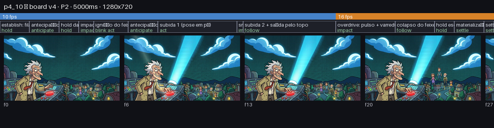
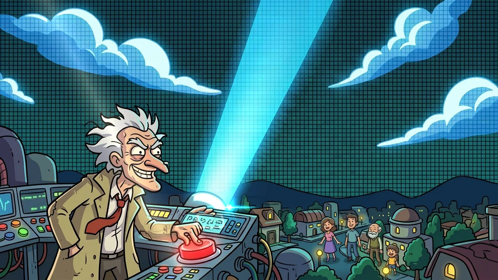
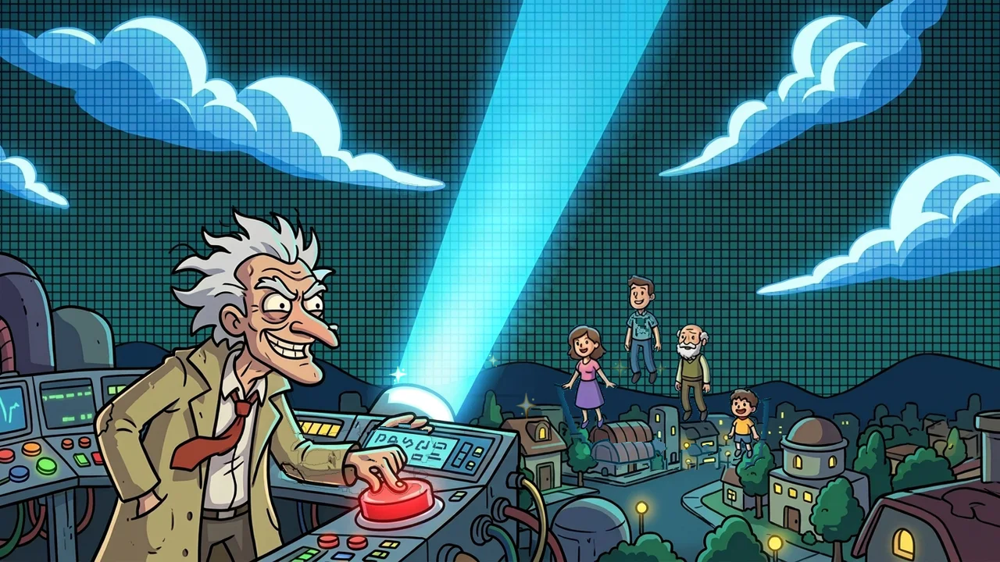
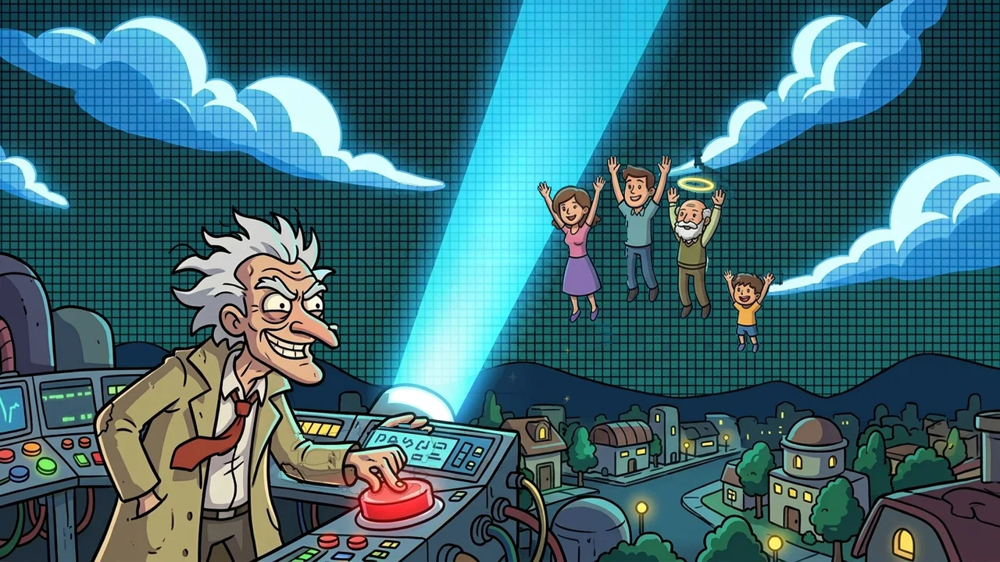
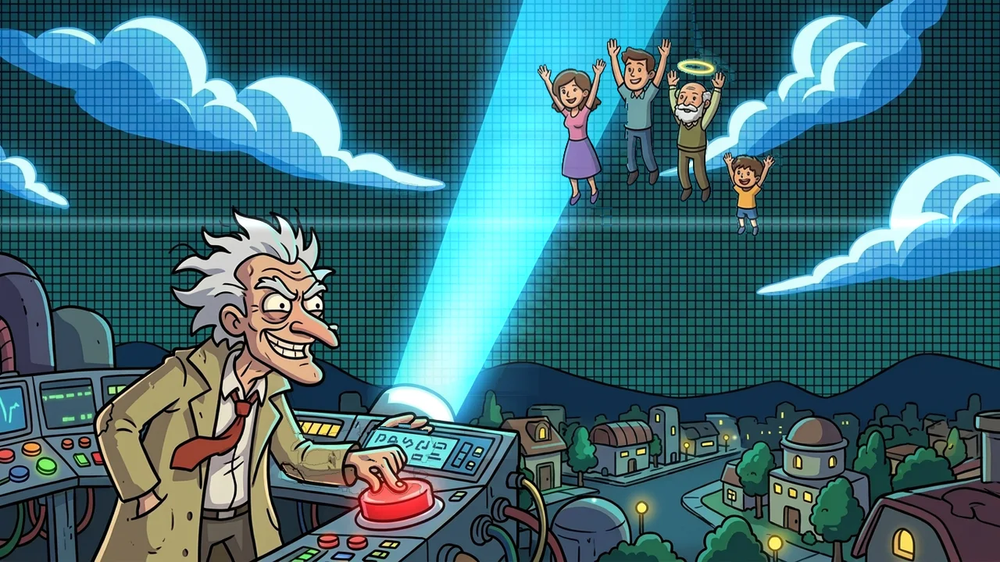
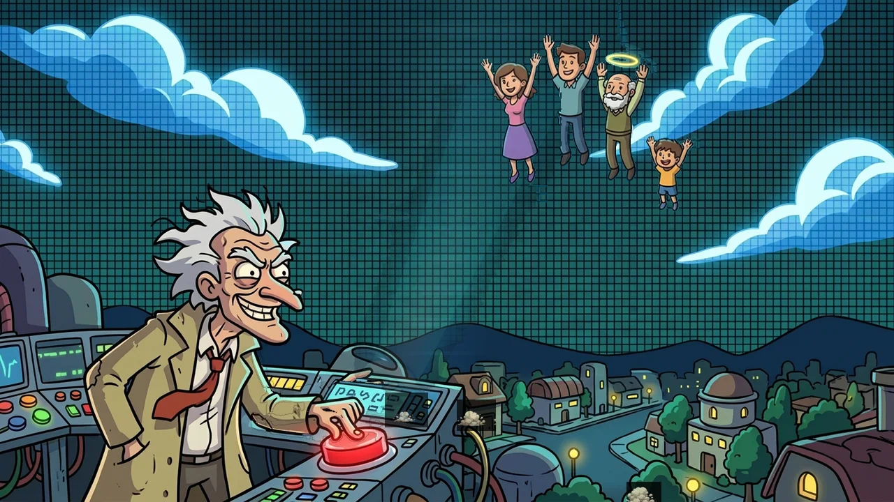
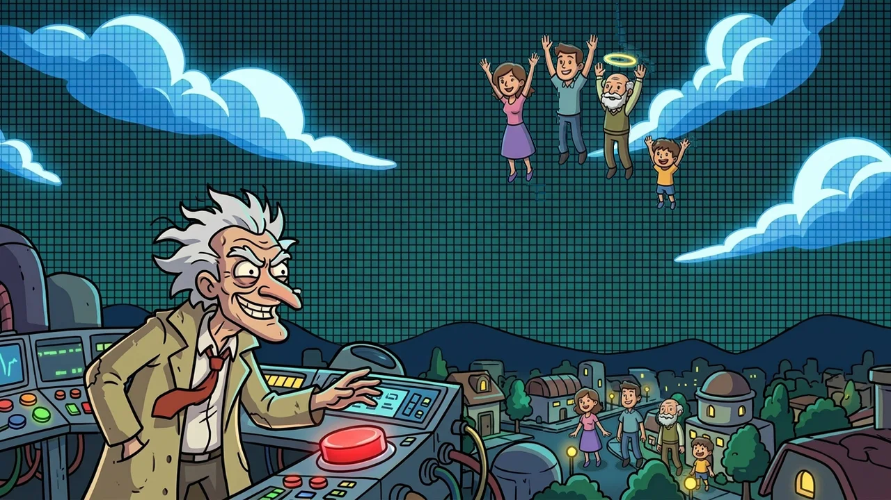

Candidata v4 — 5 s, loop fechado (aprove / reprove)

WebP animado com duração por quadro: 3.4s@10fps + 1.6s@16fps. Poster aprovado permanece a arte oficial.
v2 reprovada (“gelatina”) — referência do que NÃO queremos

Warp da pintura em placa única, 1,5 s / 12–16 quadros. Substituída pelo método v4.
Board (E0) — beats, tokens e fps

| 0–300 ms | establish: fila na rua, feixe off | hold |
| 300–600 ms | antecipação: mão ergue | anticipate |
| 600–800 ms | hold da mão erguida | hold |
| 800–950 ms | impacto: aperta o botão | impact |
| 950–1300 ms | ignição do feixe + luz varrendo | blink act |
| 1300–1600 ms | antecipação: fila agacha | anticipate |
| 1600–2400 ms | subida 1 (pose em pé) | act |
| 2400–2462 ms | smear: troca para pose flutuando | impact |
| 2462–3400 ms | subida 2 + saída pelo topo | follow |
| 3400–4000 ms | overdrive: pulso + varredura | impact |
| 4000–4400 ms | colapso do feixe + poeira | follow |
| 4400–4600 ms | hold escuro | hold |
| 4600–4900 ms | materialização holográfica da fila | settle |
| 4900–5000 ms | settle = frame 0 (loop fecha) | settle |
QA — 8 lints anti-gelatina + proveniência
| PASS | L1_plate_stability | {"worst_pct_outside": 0.0} |
| PASS | L2_edge_integrity | {"layers": [["beam", 0.0054], ["people_stand", 0.0038], ["people_float", 0.0027], ["people_float_b", 0.0046], ["hand_raise", 0.006], ["hand_press", 0.0029]], "halo_ring": |
| PASS | L3_loop_closure | {"close": 2.138, "median_adj": 1.569} |
| PASS | L4_timing | {"total_ms": 5000, "segA_s": 3.4, "segB_s": 1.588, "segB_fps": [16]} |
| PASS | L5_scale_consistency | {"bad": []} |
| PASS | L6_palette_outline | {"hue_share": 0.961, "outline_dE": 2.84} |
| PASS | L7_occlusion | {"problems": [], "z_order": [["beam", 20], ["people_stand", 30], ["people_float", 31], ["people_float_b", 32], ["hand_raise", 40], ["hand_press", 41]]} |
| PASS | L8_perf | {"loop_kb": 2132.4, "limit_kb": 2600, "timeline_frames": 60, "encoded": 55} |
| WARN | L9_provenance | {"ai": 10, "frames": 60, "pct": 16.7} |
Proveniência — IA × procedural
| plate.png | AI | backplate limpo (estado S0 pintado por IA) |
| people_stand.png | AI | pose-chave: fila em pé (diff S1−S0) |
| beam.png | AI | feixe pintado (diff S2−S0), camada de luz |
| people_float.png | AI | pose-chave: flutuando (diff S3−S2) |
| people_float_b.png | AI | pose-chave: flutuando alto (diff S3b−S2) |
| hand_press.png | AI | patch de pose: mão apertando (S4−S3) |
| hand_raise.png | AI | patch de pose: mão erguida (S5−S1) |
| fx_sparkles.png | AI | atlas de sparkles dourados |
| fx_halos.png | AI | atlas de auréolas |
| fx_dust.png | AI | atlas de poeira de impacto |
| motion.py | PROC | curvas, tokens, agenda de fps |
| rig.py | PROC | camadas afins, pivôs, squash ≤8% |
| fx.py | PROC | FX: glow, sweeps, partículas, smear |
| build_clip.py | PROC | composição + encode WebP |
10 imagens IA + 4 fontes procedurais; IA = 10/60 quadros (17%).
Quadros-chave (frames/)






PORTÃO 1 — board + assets. Board + assets desta página. Aprovando, o padrão de camadas congela.
PORTÃO 2 — clip 5 s + QA. Assista ao clip 5 s ao lado da v2. Aprovando, v4 vira o loop oficial e o Lote 1 começa.
Gerado por tools/anim/review.py · spec: docs/ANIM_V4_PLANO_REMAKE.md